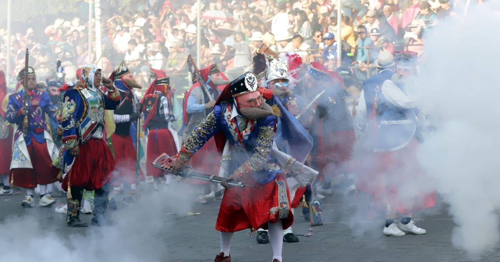
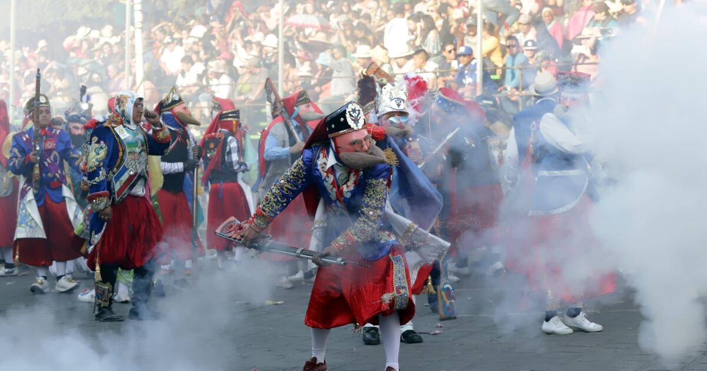

Carnaval de Huejotzingo, Puebla
El Carnaval de Huejotzingo es una festividad tradicional que marca el inicio de la Cuaresma en el calendario católico. Se celebra en la ciudad de Huejotzingo, Puebla, y cuenta con un argumento histórico único en México.
En este carnaval participan alrededor de veinte mil personas que se disfrazan con máscaras, túnicas, gaznes, tocados de plumas, escudos y fusiles. Las calles del pueblo se convierten en un enorme escenario donde se representan tres episodios históricos:
1. La Batalla de Puebla de 1862: Los mexicanos derrotaron al ejército francés. Se forman batallones que representan ambos ejércitos, disparando mosquetes cargados con pólvora para dar realismo a la escena.
2. La leyenda de Agustín Lorenzo: Un bandido que se robó a la hija del corregidor de Huejotzingo. Su historia se presenta con música, cohetes y tiros, culminando en el rapto e iniciando la persecución.
3. El primer matrimonio indígena bajo el rito católico: Se simboliza la unión que se realizó en este lugar.
El Carnaval de Huejotzingo es una experiencia única que combina historia, cultura, música y danzas. ¡No te lo pierdas!
 
